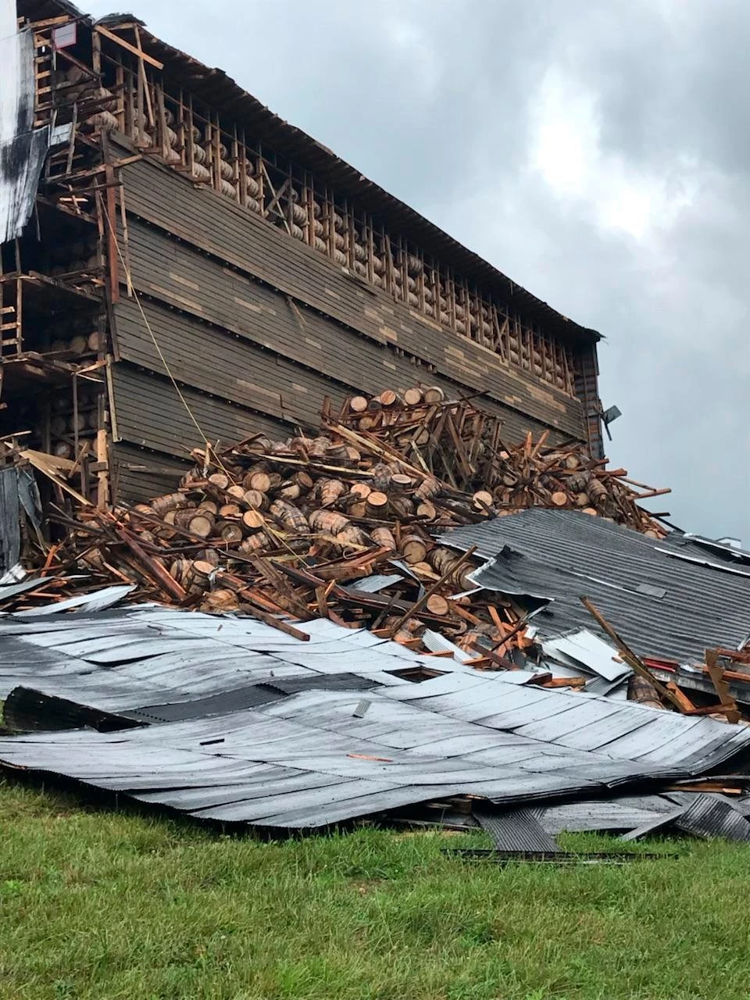

Warehouse No. 30 on the Barton 1792 Distillery campus in Bardstown, Ky., partly collapsed on Friday. About 9,000 barrels were amid the rubble.CreditChief Billy Mattingly/Bardstown Fire Department, via Associated Press
By Maya Salam
June 22, 2018
Bourbon is flowing in Kentucky, but don’t grab a glass.
Thousands of full barrels of bourbon, and possibly other spirits, came crashing down when a storage warehouse in Bardstown, Ky., partly collapsed on Friday.
The collapse at the Barton 1792 Distillery campus was called in to emergency services about 10:55 a.m., Milt Spalding, an emergency services director in Nelson County, said during a news conference on Friday.
The structure houses about 20,000 barrels, and an aerial video showed half of the building demolished. About 9,000 barrels were amid the rubble, Mr. Spalding said. Each barrel holds 53 gallons.